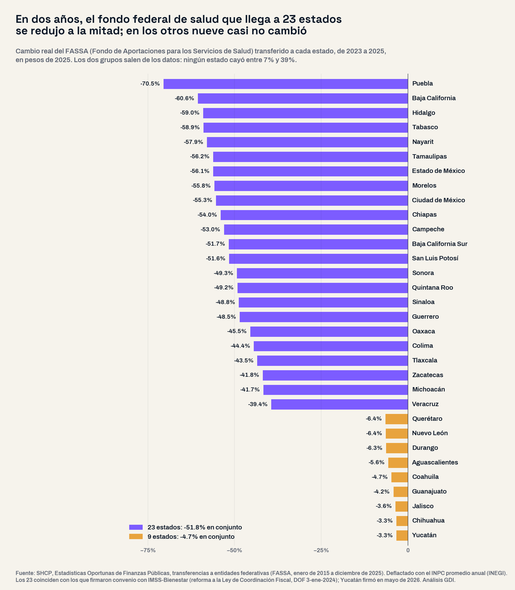
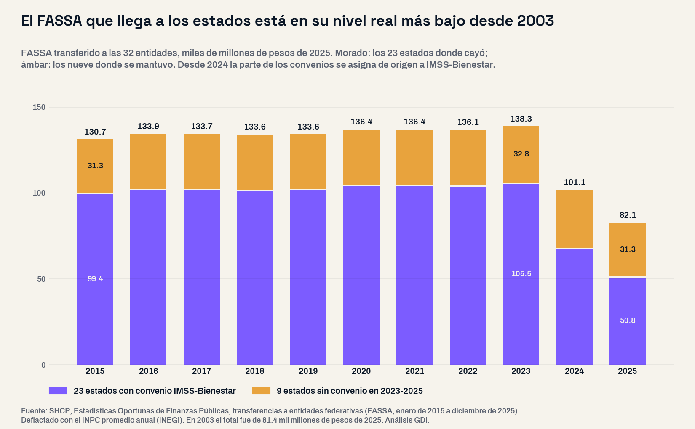

Este análisis partió de una pregunta abierta: ¿cuánto dinero federal para salud llega a cada estado, cómo cambió y qué pasó con el acceso a los servicios y con lo que los hogares pagan de su bolsillo? Se ordenaron los 32 estados, sin agruparlos de antemano, por el cambio del Fondo de Aportaciones para los Servicios de Salud (FASSA) que Hacienda registra como transferido a cada uno. Aparte se leyeron la carencia por acceso a la salud, la afiliación de la Intercensal 2025 y los microdatos de gasto de la Encuesta Nacional de Ingresos y Gastos de los Hogares (ENIGH) 2024.
Contexto: el fondo de salud del Ramo 33 cambió de reglas
El FASSA paga personal, medicinas y operación de los servicios de salud estatales para la población sin seguridad social. La reforma a la Ley de Coordinación Fiscal publicada en el Diario Oficial el 3 de enero de 2024 le cambió el destino: el monto que corresponda a IMSS-Bienestar por los convenios que firmó con los estados «se asignará de origen en el Presupuesto de Egresos de la Federación a dicho organismo» (artículo 30). Los estados con convenio reciben solo la parte ligada a las obligaciones que conservan, como el personal con regímenes de seguridad social propios, y deben pasarla a un fideicomiso en cinco días hábiles. El decreto deja a IMSS-Bienestar como responsable del ejercicio y de la rendición de cuentas de esos recursos.
Radiografía: el FASSA nacional en su nivel real más bajo desde 2003
En 2023 Hacienda transfirió $127.2 mil millones de pesos de FASSA a los 32 estados; en 2024, $97.4 mil millones, y en 2025, $82.1 mil millones: 35.5% menos en pesos corrientes y 40.7% menos descontando la inflación. A precios de 2025, es el monto más bajo desde 2003. El fondo pasó de representar 5.27% del gasto federalizado en 2023 a 3.04% en 2025.

Alerta 1: dos grupos que dibujaron los propios datos
La caída no fue pareja. En 23 estados el FASSA transferido cayó entre 39.4% y 70.5% real entre 2023 y 2025; en los otros nueve, entre 3.3% y 6.4%. Ningún estado quedó en medio. Los 23 son exactamente los que firmaron convenio con IMSS-Bienestar, según la lista que publicó el CIEP con el paquete presupuestal 2025; los nueve que no lo tenían son Aguascalientes, Chihuahua, Coahuila, Durango, Guanajuato, Jalisco, Nuevo León, Querétaro y Yucatán. Yucatán firmó su ingreso en mayo de 2026; su FASSA de enero a agosto aún no lo refleja. En conjunto, el FASSA de los 23 bajó de $105.5 mil millones (a precios de 2025) a $50.8 mil millones, 51.8% menos; el de los nueve, 4.7%.
La caída mayor fue la de Puebla, 70.5%. En la mayoría el ajuste llegó en 2024; en Baja California, el Estado de México, Michoacán, Oaxaca y San Luis Potosí, sobre todo en 2025. Medido por habitante con la población de la Intercensal 2025, el orden se invirtió: en 2023 los 23 estados recibían $1,132 por habitante (pesos de 2025), 28% más que los nueve; en 2025 recibieron $545, 35% menos que los $841 de los nueve. En 2026 la caída no se profundizó: de enero a agosto llegaron 12.0% más pesos corrientes que en el mismo periodo de 2025 a los 23 estados y 12.2% más a los nueve, pero sobre una base ya reducida.

Alerta 2: lo que ya no se puede seguir estado por estado
Que el dinero no llegue a la tesorería estatal no significa que haya desaparecido: por ley se presupuesta directamente para IMSS-Bienestar, que opera los servicios en esos estados. El problema es otro. Las estadísticas de transferencias de Hacienda, que desde 1998 permiten seguir el FASSA estado por estado, ya no registran la parte que se asigna a IMSS-Bienestar: con esa fuente ya no se puede saber cuánto dinero federal de salud corresponde a cada uno de los 23 estados con convenio. El CIEP advirtió que en el proyecto de presupuesto 2025 el 84.4% del programa de atención a la salud y medicamentos gratuitos para la población sin seguridad social se clasificó como no distribuible geográficamente, y que no queda claro si la redistribución a través de IMSS-Bienestar seguirá el principio compensatorio de las aportaciones federales: dar más a quien más rezago tiene.
| Estado | Convenio IMSS-Bienestar en 2025 | FASSA 2023, mdp de 2025 | FASSA 2025, mdp | Cambio real | FASSA por habitante, 2025 | Sin afiliación a servicios de salud, 2025 | Carencia de acceso a la salud, 2018 → 2024 | Hogares con gasto catastrófico en salud, 2024 |
|---|---|---|---|---|---|---|---|---|
| Puebla | Sí | 5,431 | 1,603 | -70.5% | $235 | 38.0% | 20.8 → 47.3% | 3.5% |
| Baja California | Sí | 3,303 | 1,303 | -60.6% | $328 | 23.4% | 16.9 → 23.3% | 1.1% |
| Hidalgo | Sí | 4,545 | 1,862 | -59.0% | $575 | 35.7% | 14.4 → 43.5% | 5.5% |
| Tabasco | Sí | 3,710 | 1,524 | -58.9% | $604 | 29.8% | 12.6 → 35.1% | 4.1% |
| Nayarit | Sí | 2,426 | 1,021 | -57.9% | $792 | 19.3% | 13.7 → 25.7% | 3.2% |
| Tamaulipas | Sí | 4,282 | 1,877 | -56.2% | $520 | 23.5% | 12.0 → 25.1% | 2.5% |
| Estado de México | Sí | 14,429 | 6,330 | -56.1% | $360 | 34.5% | 19.8 → 40.2% | 2.9% |
| Morelos | Sí | 2,408 | 1,065 | -55.8% | $536 | 29.1% | 16.8 → 44.0% | 4.0% |
| Ciudad de México | Sí | 6,230 | 2,783 | -55.3% | $304 | 19.7% | 20.1 → 21.8% | 3.5% |
| Chiapas | Sí | 6,421 | 2,953 | -54.0% | $506 | 39.7% | 17.6 → 63.3% | 4.4% |
| Campeche | Sí | 2,267 | 1,065 | -53.0% | $1,101 | 26.1% | 11.7 → 28.5% | 3.5% |
| Baja California Sur | Sí | 1,514 | 732 | -51.7% | $766 | 13.3% | 10.7 → 19.6% | 1.8% |
| San Luis Potosí | Sí | 2,758 | 1,336 | -51.6% | $464 | 26.2% | 9.0 → 33.4% | 4.5% |
| Sonora | Sí | 3,617 | 1,833 | -49.3% | $605 | 14.4% | 12.6 → 24.1% | 2.0% |
| Quintana Roo | Sí | 2,439 | 1,240 | -49.2% | $592 | 25.1% | 15.6 → 30.3% | 1.4% |
| Sinaloa | Sí | 3,852 | 1,972 | -48.8% | $644 | 18.6% | 13.2 → 24.7% | 2.8% |
| Guerrero | Sí | 7,148 | 3,684 | -48.5% | $1,082 | 32.6% | 13.8 → 38.9% | 5.8% |
| Oaxaca | Sí | 6,426 | 3,505 | -45.5% | $844 | 44.8% | 16.3 → 43.9% | 8.5% |
| Colima | Sí | 1,993 | 1,107 | -44.4% | $1,459 | 15.2% | 10.8 → 24.0% | 3.3% |
| Tlaxcala | Sí | 2,428 | 1,372 | -43.5% | $968 | 27.4% | 13.7 → 39.3% | 3.5% |
| Zacatecas | Sí | 3,366 | 1,958 | -41.8% | $1,164 | 30.0% | 11.7 → 33.8% | 5.4% |
| Michoacán | Sí | 5,027 | 2,931 | -41.7% | $602 | 39.7% | 21.2 → 46.1% | 5.4% |
| Veracruz | Sí | 9,477 | 5,744 | -39.4% | $727 | 33.5% | 16.7 → 40.7% | 4.5% |
| Querétaro | No | 2,651 | 2,481 | -6.4% | $954 | 21.8% | 11.8 → 24.1% | 2.7% |
| Nuevo León | No | 3,847 | 3,602 | -6.4% | $574 | 10.6% | 13.0 → 15.8% | 2.0% |
| Durango | No | 3,192 | 2,991 | -6.3% | $1,549 | 24.2% | 13.1 → 30.4% | 2.7% |
| Aguascalientes | No | 2,271 | 2,143 | -5.6% | $1,397 | 20.7% | 11.4 → 25.2% | 3.1% |
| Coahuila | No | 2,801 | 2,670 | -4.7% | $784 | 14.9% | 13.2 → 20.3% | 2.3% |
| Guanajuato | No | 4,690 | 4,495 | -4.2% | $700 | 22.8% | 13.7 → 33.7% | 3.5% |
| Jalisco | No | 6,625 | 6,388 | -3.6% | $740 | 20.8% | 19.4 → 32.0% | 4.2% |
| Chihuahua | No | 3,831 | 3,704 | -3.3% | $953 | 13.9% | 11.3 → 20.9% | 1.5% |
| Yucatán | No | 2,882 | 2,787 | -3.3% | $1,114 | 27.8% | 14.1 → 26.1% | 4.2% |
| Nacional | — | 138,288 | 82,061 | -40.7% | $629 | 27.3% | 16.2 → 34.2% | 3.6% |
Filas sombreadas: estados sin convenio en 2025. FASSA: SHCP, suma de los 12 meses. Por habitante: población de la Intercensal 2025. Sin afiliación: Intercensal 2025. Carencia: medición de pobreza 2018 y 2024. Gasto catastrófico: ENIGH 2024, microdatos (encuesta por muestreo; por estado el margen es amplio). Fuentes distintas que no se combinan en un indicador.
Alerta 3: la carencia subió antes del cambio y sigue alta
La carencia por acceso a los servicios de salud pasó de 16.2% de la población en 2018 a 39.1% en 2022 y bajó a 34.2% en 2024: 44.5 millones de personas, contra 20.1 millones en 2018. En los 23 estados con convenio, la proporción conjunta pasó de 16.9% a 42.9% y luego a 37.4% (34.9 millones de personas); en los nueve, de 14.4% a 29.4% y a 26.1%. El salto ocurrió entre 2018 y 2022, antes del cambio en el FASSA, y de 2022 a 2024 ambos grupos mejoraron: los datos no permiten atribuirlo al nuevo modelo. Chiapas tiene la carencia más alta del país, 63.3% en 2024, y el mayor aumento desde 2018: 45.7 puntos.
Alerta 4: el costo que absorben los hogares
Según los microdatos de la ENIGH 2024, los hogares del país gastaron unos $249.3 mil millones de pesos de su bolsillo en salud en 2024: 38.3% en medicamentos, 34.7% en consultas y atención ambulatoria y 27.0% en atención hospitalaria. Para dimensionar, equivale a 2.6 veces el FASSA transferido a los 32 estados ese año; son fuentes distintas y el FASSA es solo una parte del gasto público en salud. Los 13.7 millones de hogares donde nadie tiene seguridad social gastaron $68.7 mil millones: en promedio menos pesos por hogar que el resto, pero una proporción mayor de su ingreso (2.47% contra 1.94%).
El indicador más delicado es el gasto catastrófico: hogares que destinaron a salud al menos 30% de lo que gastaron fuera de la comida. Fueron 1,386,256 hogares, 3.6% del total; 4.9% entre los hogares sin seguridad social y 6.4% en el 10% de menor ingreso. Oaxaca encabeza con 8.5% de sus hogares, una proporción que con 95% de confianza supera a la de cualquier otro estado. En los 23 estados con convenio la proporción fue 3.8% y en los nueve sin convenio 3.0%; la diferencia es significativa, pero los 23 también tienen más población sin afiliación (30.6% contra 18.9%): no se puede atribuir al modelo de atención.
Datos complementarios
La Intercensal 2025 cuenta 27.3% de la población sin afiliación a ningún servicio de salud, unos 35.5 millones de personas, y 5.2% de la población afiliada declara estar en IMSS-Bienestar. De quienes usan algún servicio, 18.7% acude habitualmente a un consultorio privado y 14.6% al de una farmacia. Y, como documentamos la semana pasada, solo 44 de cada 100 afiliados al IMSS que recibieron atención se atendieron en el IMSS.
Implicaciones para la gestión pública
1. Pedir el dato por estado. Congresos y secretarías de finanzas de los 23 estados con convenio pueden solicitar a IMSS-Bienestar el gasto ejercido en su territorio. Sin esa cifra, el diagnóstico de salud de un plan estatal o municipal queda incompleto; nuestra guía del plan municipal de desarrollo explica cómo construirlo con fuentes oficiales.
2. Vigilar el FASSA que sigue llegando. Contralorías y auditorías locales pueden verificar que pase al fideicomiso en cinco días hábiles, con sus rendimientos.
3. Usar el presupuesto 2027 para fijar la cifra. La Cámara de Diputados aprueba el Presupuesto de Egresos a más tardar el 15 de noviembre: es el momento de revisar cuánto FASSA va a cada estado y cuánto de origen a IMSS-Bienestar.
4. Atender el gasto catastrófico con acciones locales. Medicamentos son 38.3% del gasto de bolsillo y 49.9% en los hogares de menor ingreso. Abasto, traslados y detección temprana son terreno estatal y municipal, haya o no convenio.
5. Los estados sin convenio conservan toda la responsabilidad. Hoy son ocho, tras el ingreso de Yucatán. En 2023-2025 su FASSA no creció en términos reales y su carencia conjunta (26.1%) sigue arriba de la de 2018 (14.4%).
Conclusión
Entre 2023 y 2025, el FASSA que llega a 23 estados se redujo a la mitad en términos reales y el nacional regresó a niveles de 2003, porque la ley asigna esa parte de origen a IMSS-Bienestar. En 2024, 44.5 millones de personas carecían de acceso a servicios de salud y los hogares pagan de su bolsillo unos $249 mil millones al año. Para estados y municipios, la pregunta ya no es cuánto FASSA reciben, sino cuánto dinero federal de salud se gasta en su territorio.
¿Cuánta población de tu municipio no tiene acceso a servicios de salud?
En la plataforma de GDI puedes consultar la afiliación a servicios de salud de la Intercensal 2025 de tu municipio, la carencia por acceso a la salud y la pobreza, las finanzas públicas municipales y la proyección de población de CONAPO, para diagnosticar tu territorio con fuentes oficiales integradas.
Explorar mi territorioPreguntas frecuentes
¿Qué es el FASSA y por qué bajó?
Es el Fondo de Aportaciones para los Servicios de Salud del Ramo 33. Desde la reforma a la Ley de Coordinación Fiscal del 3 de enero de 2024, la parte que corresponde a los estados con convenio IMSS-Bienestar se asigna de origen a ese organismo, y por eso el FASSA transferido a esos 23 estados cayó 51.8% real entre 2023 y 2025.
¿Qué estados no tienen convenio con IMSS-Bienestar?
Ocho: Aguascalientes, Chihuahua, Coahuila, Durango, Guanajuato, Jalisco, Nuevo León y Querétaro. Yucatán tampoco lo tenía en 2023-2025 y firmó su ingreso en mayo de 2026. En los nueve el FASSA transferido cambió entre -6.4% y -3.3% real de 2023 a 2025.
¿Cuánto gastan los hogares en salud de su bolsillo?
Unos $249.3 mil millones de pesos en 2024, según los microdatos de la ENIGH 2024: 38.3% en medicamentos, 34.7% en consultas y atención ambulatoria y 27.0% en hospital.
¿Cuántas personas no tienen acceso a servicios de salud?
44.5 millones en 2024, 34.2% de la población, según la medición de pobreza; en 2018 eran 20.1 millones (16.2%).
Datos técnicos
Fuentes: SHCP, Estadísticas Oportunas de Finanzas Públicas, transferencias a entidades federativas: Fondo de Aportaciones para los Servicios de Salud, mensual, enero de 2015 a agosto de 2026; Ley de Coordinación Fiscal, artículos 25 y 30 y transitorios del decreto publicado en el DOF el 3 de enero de 2024 (texto vigente, Cámara de Diputados); CIEP, «Gasto federalizado en el PPEF 2025. Menos recursos, mayor centralización» (4 de diciembre de 2024); ingreso de Yucatán a IMSS-Bienestar: Por Esto, 17 de mayo de 2026; medición de pobreza 2018, 2020, 2022 y 2024 (carencia por acceso a los servicios de salud); INEGI, Encuesta Intercensal 2025; INEGI, ENIGH 2024, microdatos del concentrado del hogar y de la tabla de población, con factor de expansión; INEGI, INPC. Las transferencias de Hacienda y los microdatos de la ENIGH no están en la plataforma de GDI; el resto se consultó en la capa de datos validada de Lokus.
Método: FASSA anual = suma de los 12 meses; pesos de 2025 con el INPC promedio anual. Los grupos se definieron por el corte natural del cambio 2023-2025 (ningún estado entre −39.4% y −6.4% real) y se cotejaron después con la lista de adhesión. Gasto de bolsillo = rubro «cuidados de la salud» de la ENIGH (atención ambulatoria, hospitalaria y medicamentos), trimestral por cuatro. Hogar sin seguridad social: ningún integrante afiliado a IMSS, ISSSTE, ISSSTE estatal, Pemex, Defensa o Marina. Gasto catastrófico: gasto en salud igual o mayor a 30% del gasto monetario menos alimentos, bebidas y tabaco. Intervalos de 95% por linealización con estrato y unidad primaria de muestreo.
Advertencias metodológicas: el FASSA transferido no es todo el gasto federal en salud de un estado: no incluye lo que IMSS-Bienestar, el IMSS, el ISSSTE o los institutos nacionales gastan en él. La serie «Protección social en salud» de las mismas estadísticas no se usó porque su reparto por estado no es comparable entre años. La ENIGH es una encuesta por muestreo: por estado, la proporción de hogares con gasto catastrófico tiene márgenes de ±0.4 a ±1.3 puntos. La ENIGH 2024 y el FASSA 2024 están en pesos de ese año; la comparación entre ellos es de tamaño y no forma un indicador. El análisis no atribuye causas: describe lo que muestran los datos.
Clasificación SCIAN: 62 servicios de salud y de asistencia social; 621 servicios médicos de consulta externa; 622 hospitales; 46411 comercio al por menor de productos farmacéuticos.
Nota: el análisis partió de una pregunta abierta y del universo completo de estados ordenado por el cambio del FASSA; los grupos y el patrón emergen de los datos, no de una clasificación previa.
Análisis: GDI — Gobierno Digital e Innovación · Fecha de análisis: 30 de octubre de 2026 · gobiernodigitaleinnovacion.com